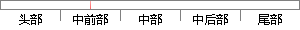

中增加了测向信息，通过先验信息和工程实际消除了模糊解。
片段位置图

相似结果|
1
原句片段：中增加了测向信息，通过先验信息和工程实际消除了模糊解。
相似片段 1：2. 3 对模糊解的处理(1)通过增加测向信息消除模糊解。测出辐射源相对主测量站...(2)通过先验信息和工程实际消除模糊解。例如,威胁辐射源一般位于对敌前方,当两...
相似片段 2：还考虑样本与类中其它样本之间的关系,通过模糊连接度...实际工程应用中,由于无法精确得到目标位置的先验......月22日 标签: 滤波初值对测向定位的影响及其消除...
相似片段 3：还考虑样本与类中其它样本之间的关系,通过模糊连接度...实际工程应用中,由于无法精确得到目标位置的先验......月22日 标签: 滤波初值对测向定位的影响及其消除...
相似片段 4：仪测向性能的提高及其验证_信息与通信_工程科技_专业...不需要角度的先验信息,只需执行 一次解模糊运算,就...所以需要对这类的情况作处理,步骤如下: 实际测向...
|
※ 片段修改建议 ※
近似词参考：- 通过：经由过程
- 实际：现实
- 消除：消弭 解除
- 除了：除
- 模糊：恍惚 含糊 模胡 依稀 隐约
系统自动生成语句：中增加了测向信息，经由过程先验信息和工程现实消弭了恍惚解。
注：本片段修改建议为系统自动生成，仅供参考。